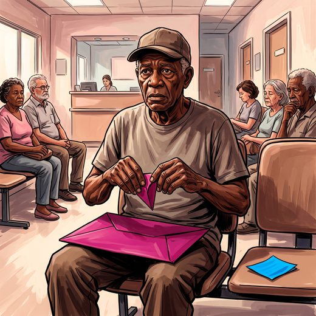

Consulta rápida à beira do leito
Condutas, doses e interações.
Referências da aula · 12
- França John J, Etges APBS, Sganzerla D, et al. Low-value preoperative care in low-risk procedures: clinical and economic burden for health system sustainability. Int J Qual Health Care. 2026;38(1):mzag036. PMID 41834109. doi:10.1093/intqhc/mzag036. — dados reais brasileiros (IATS/UFRGS): 27.678 cirurgias de baixo risco, exames pré-operatórios em 57,5%, R$ 10,88 milhões sem benefício clínico mensurável.PubMedDOI
- Alves FV, Ferreira EB, de Moraes FY, Karim S, Dos Reis PED. Choosing Wisely recommendations in oncology: a scoping review. Support Care Cancer. 2026;34(3). PMID 41779061. doi:10.1007/s00520-026-10437-z. — UnB: 220 recomendações; personalizar rastreio e tratamento pela expectativa de vida.PubMedDOI
- Vickers AJ, Kasivisvanathan V, Brentnall AR. Effect of implementing population-based PSA screening on testing rates and prostate cancer overdiagnosis in England: a statistical modelling study. Int J Cancer. 2026. PMID 42572363. doi:10.1002/ijc.70698. — rastreio oportunístico em homens com 70+ anos gera as maiores taxas de sobrediagnóstico.PubMedDOI
- Davenport MS, Perazella MA, Yee J, et al. Use of intravenous iodinated contrast media in patients with kidney disease: consensus statements from the American College of Radiology and the National Kidney Foundation. Radiology. 2020;294(3):660-8.
- Nicolle LE, Gupta K, Bradley SF, et al. Clinical practice guideline for the management of asymptomatic bacteriuria: 2019 update by the Infectious Diseases Society of America. Clin Infect Dis. 2019;68(10):e83-e110.
- AGS Choosing Wisely Workgroup. American Geriatrics Society identifies another five things that healthcare providers and patients should question. J Am Geriatr Soc. 2014;62(5):950-60.
- Lee SJ, Boscardin WJ, Stijacic-Cenzer I, Conell-Price J, O’Brien S, Walter LC. Time lag to benefit after screening for breast and colorectal cancer: meta-analysis of survival data from the United States, Sweden, United Kingdom, and Denmark. BMJ. 2013;346:e8441.
- Welch HG, Black WC. Overdiagnosis in cancer. J Natl Cancer Inst. 2010;102(9):605-13.
- Walter LC, Covinsky KE. Cancer screening in elderly patients: a framework for individualized decision making. JAMA. 2001;285(21):2750-6.
- Deyo RA. Cascade effects of medical technology. Annu Rev Public Health. 2002;23:23-44.
- Freitas EV, Py L, organizadores. Tratado de Geriatria e Gerontologia. 5ª ed. Rio de Janeiro: Guanabara Koogan; 2022.
- Linhares Junior JD. Casos clínicos ilustrativos construídos para as aulas, a partir da prática clínica geriátrica. In: Pós-graduação em Geriatria 2.0. Afya; 2026.